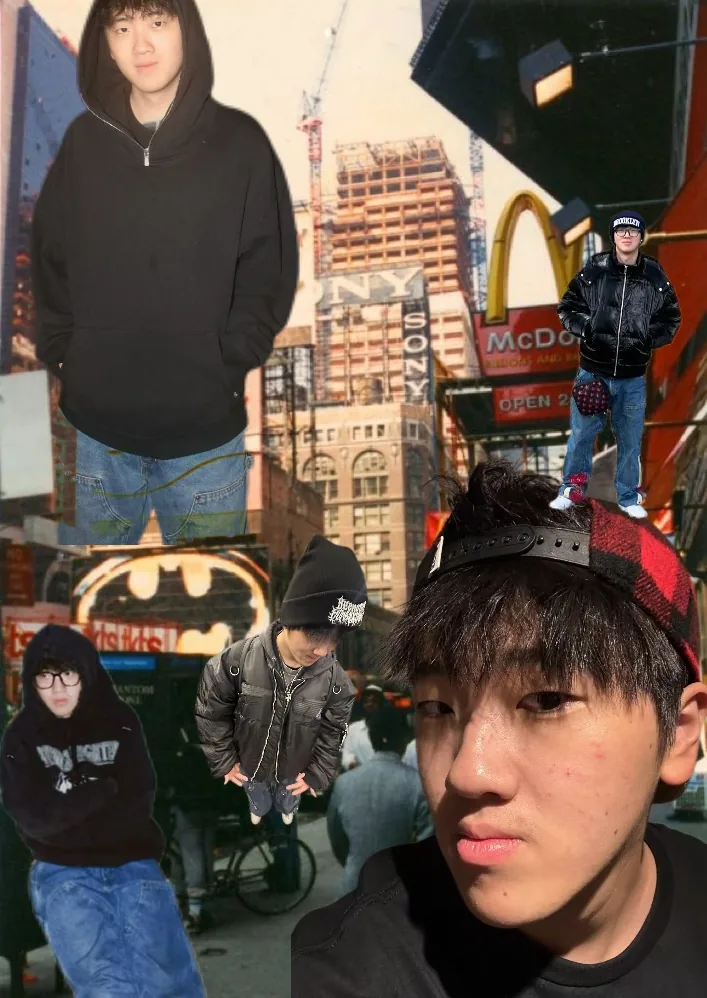

I turn ideas into things people can use, play and wear: apps and interfaces, games, and creative work shaped by youth culture and the underground.
Apps and web products built for real users and real markets, from research and UX to working code. I’m currently developing my own app products with commercial use in mind.
Game design student at Parsons with 20+ small games released, from narrative mysteries to local multiplayer.
Creative projects around youth culture, music and brands — visuals, campaigns and interactive pieces I make because I love them.
Styling connected to New York’s underground music and fashion scene.
Improved the UI/UX of an educational app and completed the competitive, market and user research that shaped its marketing campaign and campus roadshows.
Designed an AI agent–assisted management system for the leadership team, from interviews and user flows to the interface, refined through user testing.
Led a team of developers and designers on an AI-powered archive that turns spatial memories into living 3D spaces, using 3D scanning and Gaussian splatting.
Tools — Figma · Unity · p5.js · Expo · Blender · Adobe Creative Suite · AI tools
Turning spontaneous impulses into live music experiences — field research with young people across the US, audience- and service-side prototypes, and the app itself.
Team lead and game designer. A 2D crime mystery about memory and guilt.
Small games across genres, built with the Parsons Game Jam team.
Fashion, visuals and objects.
Open to product, UI/UX and creative technology roles, and to collaborations with brands and artists.
Full CV available on request.